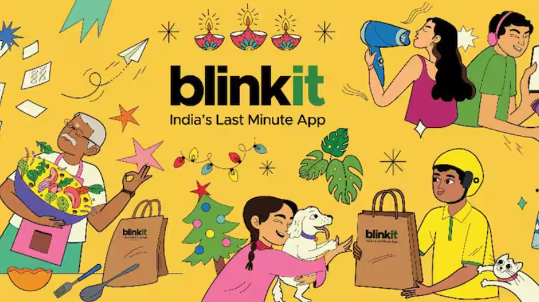

AI Doctor is a machine learning-based web app that predicts diseases from user-input symptoms. It provides the disease name along with relevant information such as description, medications, precautions, and diet recommendations.

Dive into the game like never before with our interactive Cricket Analytics Dashboard built using Power BI. This powerful tool transforms raw match data into insightful visualizations, helping users explore player performance, match stats, team comparisons, and tournament trends with ease. Designed for fans, analysts, and decision-makers, the dashboard offers a comprehensive view of the sport, making data-driven cricket analysis accessible and engaging.
This project visualizes key HR metrics through a fully interactive Tableau dashboard designed to support data-driven decision-making in human resources. It includes over 15 dynamic charts covering hiring trends, terminations, department-wise headcount, gender distribution, salary analysis, and employee demographics. Custom calculated fields and dual-axis charts offer deeper insights, while interactive filters allow users to explore data by job role, location, age group, and more.

This Power BI dashboard presents an insightful analysis of Blinkit's sales and outlet performance across different locations, sizes, and product categories. It highlights key metrics such as total and average sales, item count, and customer ratings, while offering interactive filtering for detailed exploration. Visuals include sales trends over time, fat content distribution, item type breakdowns, and outlet comparisons helping identify top-performing segments and guiding data-driven decisions for growth and optimization.
This project leverages Power BI to provide actionable insights into how 200 companies across Bengaluru choose their office spaces. The dashboard explores key decision-making factors including location preferences, office types (private, hybrid, co-working), company size, industry, and zone categories. With interactive visuals and filters, users can identify trends in workspace selection between corporates, startups, and SMEs—empowering real estate stakeholders and businesses to make informed, data-driven decisions when selecting office spaces.
BankSight is a data-driven project that blends Python and Power BI to deliver actionable insights into customer behavior within the banking sector. Covering data from over 3,000 clients, the dashboard explores key financial indicators such as deposit volumes, loan distributions, income segments, and demographic patterns. Through interactive visuals and filters, users can analyze trends across different customer groups—enabling banks and financial analysts to make smarter, data-informed decisions.